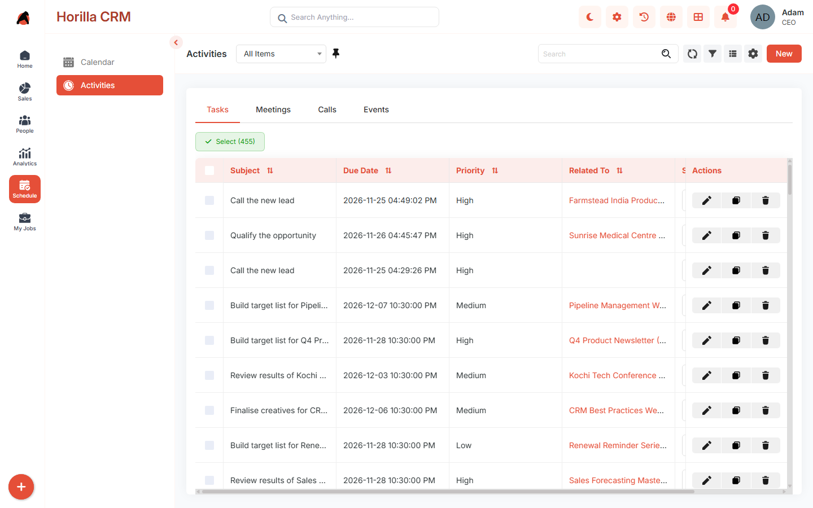
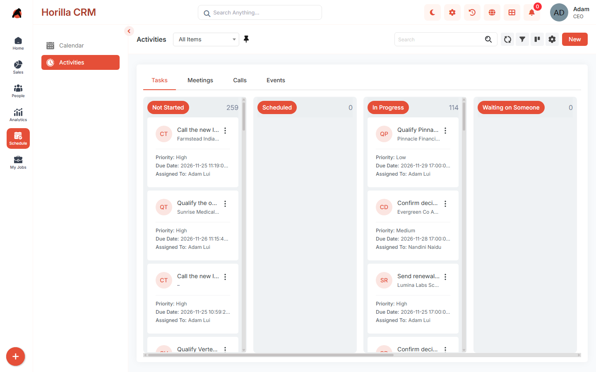
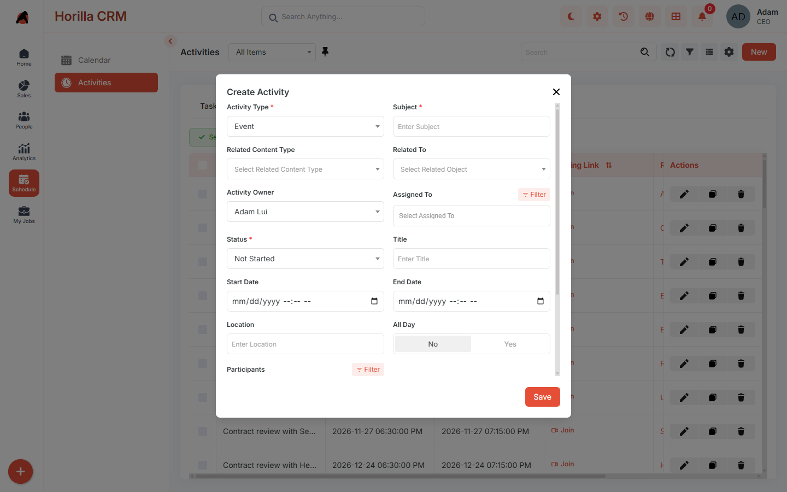
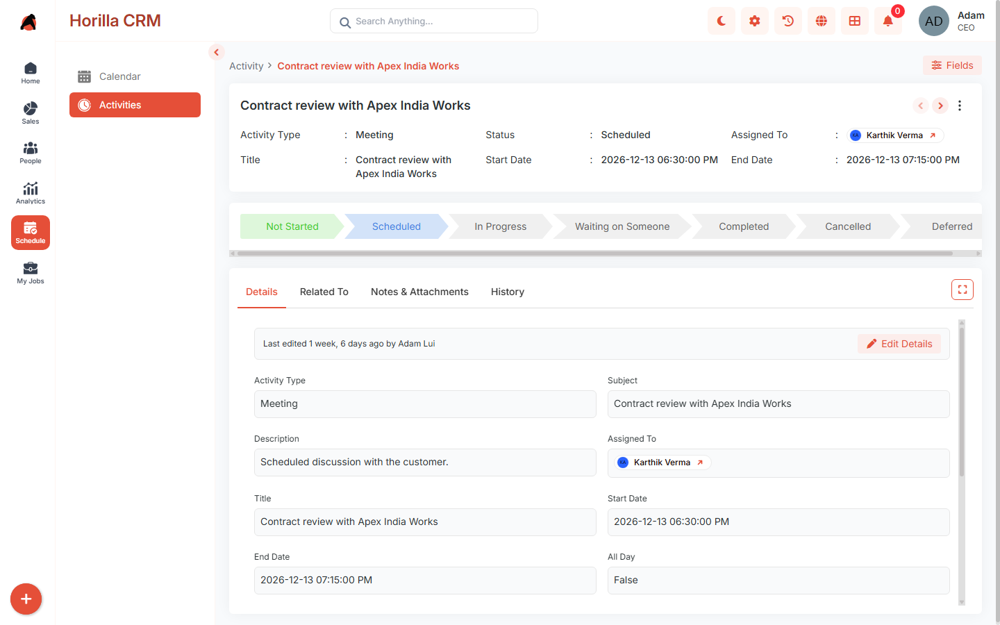

Introduction
The Activities module is used to track, schedule and manage interactions with accounts and contacts — calls, meetings, tasks and events — with each activity linked to the related CRM record.
Key Features and Functionalities
2.1 Activities Overview
Purpose: provide a consolidated list view for tracking activities and keeping them up to date.

- Open the module from Activities in the sidebar.
- Search and filter by subject, type or related record.
- The list view shows Subject, Description, Activity Type, Source, Related To and Status.
- Select rows in bulk to edit, delete or export them.
2.2 Kanban View
Purpose: show activities visually, grouped by status.

- Columns represent statuses such as Pending and Completed.
- Drag and drop a card to update its status.
- Each card shows Subject, Type, Source and Related Record.
- The view makes it easier to monitor progress.
- The Kanban settings can be customised.
1.3 Creating a New Activity
Purpose: add new activities.

- Click the New button on the Activities page.
-
Complete the core fields:
- Activity Type — Task, Event, Call, Meeting and similar.
- Subject, Description, Title
- Source
- Related Record — Account, Contact, Opportunity and similar.
- Status — Pending or Completed.
- Start Date, End Date, Location, Assigned To
- Save to register the activity; it then appears in both the List and Kanban views.
The source page numbers this section "1.3", out of sequence with the surrounding 2.x sections.
2.4 Activity Detailed Information
Purpose: give a full view of an activity, with tracking and editing.

- Details Tab
- Shows all the activity's fields, each of which can be edited inline.
- History Tab
- Logs the changes made, including subject changes, status transitions such as Pending to Completed, and reassignments.
- Status Tracking
- A progress bar shows where the activity stands, and the status can be updated from the detail view.